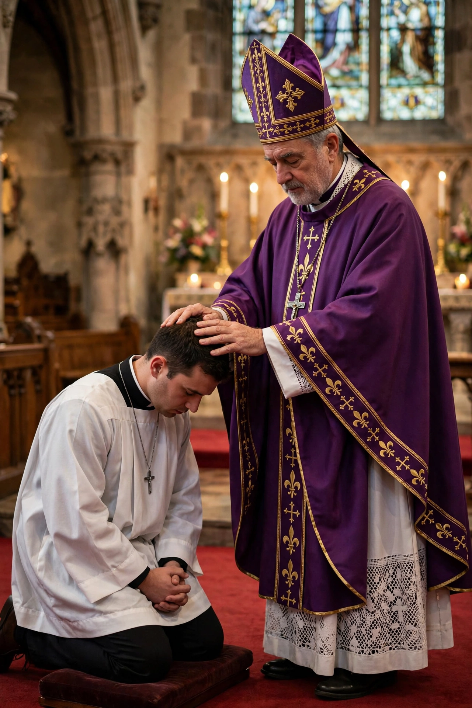

Ordination
From Wikipedia, the free encyclopedia
| Ordination | |
 | |
| Religions | Christianity, Judaism, Buddhism and others |
|---|---|
| Purpose | Conferring religious office or authority |
| Common rite | Laying on of hands |
Ordination is the process by which individuals are consecrated, set apart and elevated from the laity to the clergy, or authorized to perform religious rites and teach in a religious tradition. In Christianity it is the rite by which a person becomes a deacon, priest or bishop; Catholic, Orthodox and some Anglican churches regard Holy Orders as a sacrament.
Christianity
The New Testament describes appointment to ministry through prayer and the laying on of hands. Historic churches teach that ordination confers an indelible sacramental character and links ministers to the apostles through apostolic succession. Requirements typically include theological education, examination, and a period as a deacon before priestly ordination. Many traditions restrict ordination by sex or marital status; since the twentieth century numerous Protestant churches — and, controversially, some Anglican provinces — have ordained women, a practice the Roman Catholic and Eastern Orthodox churches do not permit. Free-church and Pentecostal traditions often ordain through congregational recognition with fewer formal requirements.
Other traditions
In Judaism, semikhah is the ordination of a rabbi. In Buddhism, ordination admits a person to the monastic sangha as a novice (pabbajja) and then fully ordained monk or nun (upasampada). Hindu, Sikh and other traditions have their own rites of authorization for religious teachers and officiants.